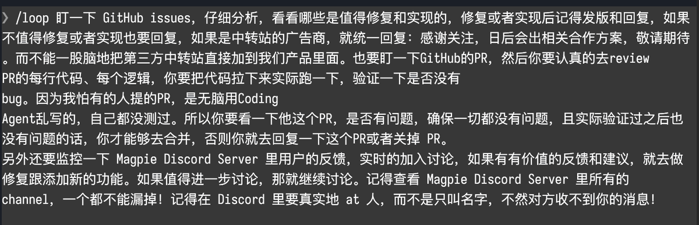
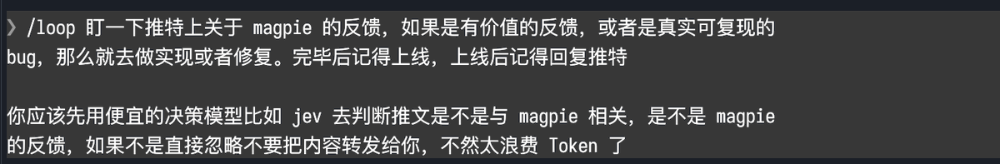
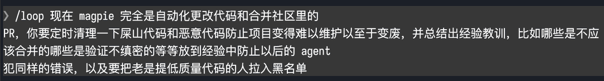

GitHub × Discord
接住真实反馈
判断 issue 的价值，复现问题，审查 PR 并验证；把讨论接回交付。
不是“有人提就做”，也不是“审过文字就算验证”。
查看原帖截图 ↗

中文产品开发经验 / VOL. 01
AI 能更快写出代码。
但值得交付的产品，来自真实问题与可信验证。
从 yetone 的三个工作循环出发，连接中文构建者的一手经验。把“看起来很厉害”，拆成你下一次开发能用上的动作。
开始精读 ↓不以热度代替质量
不把作者自述写成独立审计
“我会并行执行图里的 3 个 loop”— @yetone，原帖节选
作者说自己用 Claude Code 与官方 Opus 5.5 运行循环，晚上主要处理 UI/UX。但真正值得抄的不是模型名，而是反馈、验证和复盘之间的连接。
GitHub × Discord
判断 issue 的价值，复现问题，审查 PR 并验证；把讨论接回交付。
不是“有人提就做”，也不是“审过文字就算验证”。

X × 低成本判断
先判断帖子是否与 Magpie 有关，再处理有价值的建议和可复现 bug。
低价筛选也会漏报；我们建议保留抽样复核。

清理 × 经验沉淀
定期检查低质或恶意代码，记录误合并、漏测和维护经验。
复盘要形成可执行检查，不是无限堆积提示词。

图解为我们的归纳；展开可查看作者原始截图。图片中的自动回复、合并、发版或拉黑，不代表你已给代理这些权限。
作者事实 / FIRST PERSON
我们的解读 / EDITORIAL
@wquguru 的引用文章 ↗ 从仓库历史解释了文档路由、错题本、回退测试与发布闸门。这是第三方作者的分析，本研究没有复跑统计。
提交数、版本数、星标与改善结果只作文章作者报告；本轮没有通过 GitHub 逐项复核，禁止包装成独立验证。
社区贡献者澄清 ↗：自述 subsystem/code-standard 文档由其在 Discord 建议加入，加入之前已存在自动 review；不能把这些文档误写成原初自动化的必要起点。
主帖完整文本、三张图片、引用文章全文和作者同串17条已读；继续翻页无剩余。未读取全部公众回复。
02 / THE LIBRARY
9 篇、7 位作者，覆盖真实工程、产品体验、增长与失败。
每篇都保留适用条件，不将个案当定律。
商业结果仅核验到作者公开作出该陈述，未审计后台。阅读状态保存在当前浏览器，不上传。
与 yetone 的真实环境要求直接互证，给出了环境、架构和对账方法。
适用阶段 / 跨端扩张
能把品味转为可验收动作，而不是只给 AI 一个“高级感”。
适用阶段 / 上线前 / 激活优化
补上 yetone 截图未说明的权限与工程隔离。
适用阶段 / 工程化 / 团队协作
给出从流量到付费用户的具体定位修正，不仅泛谈营销。
适用阶段 / 首次付费后 / 获客
明确的失败结果能抵消幸存者偏差，区分“有人用”和“愿付费”。
适用阶段 / 需求验证 / 首单
把国际化从工程完工继续推进到分发；可作为小而具体的发布动作。
适用阶段 / 发布 / 国际化
失败样本提出可检验假设，提醒别用流量掩盖意图错配。
适用阶段 / 定位 / 转化诊断
最重要反例：高质量设计、高评分和留存不自动变成收入；要提前验证单位经济。
适用阶段 / 商业验证 / 全职决策
从付费继续看激活，而且承认测量本身可能不准；把 AI 开发接入真实反馈。
适用阶段 / MVP后 / 反馈 / 激活
日期：页面仅显示 Apr 2，未核验年份；不据推测补年。
没有匹配结果。换个关键词，或重置筛选。
03 / PUT IT TO WORK
我们的执行建议，不是作者原话。
点击勾选，进度只保存在本地浏览器。
已完成 0 / 8
04 / EVIDENCE & REVISIONS
优先一手构建者、真实产品、可描述的过程和明确的限制。保留失败样本；不收录只有匿名营收截图、泛泛资源列表的帖子。
两篇候选因产品实物无法跟踪或作者署名缺失，暂不列入主精选。日期不能确定时，明确标注，不猜年份。
初版：yetone 精读、3 个反馈闭环、9 篇 / 7 位作者精选；画说日期保留年份不确定性。
数据由本地维护、校验和构建；本页没有后台爬虫，没有自动收集个人数据。持续更新以实际新增证据为准。